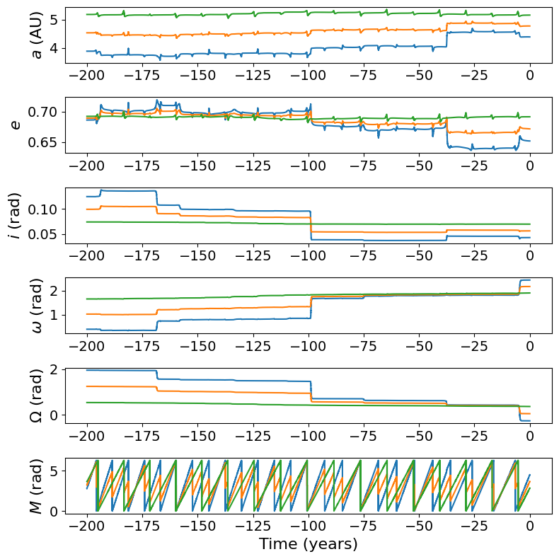

------------------------
2 Agustus 2024, Telegram elektronik dari Central Bureau for Astronomical Telegrams, bernomor 5425, M. Meyer (Limburg, Jerman) mengidentifikasi adanya "kesamaan orbit" antara komet D/1894 F1 (Denning) dengan asteorid pelintas-Mars 2007 HE4. Hal ini ia dapati dari Integrasi orbit yang ia lakukan (dengan waktu simulasi maju dan simulasi mundur). Hasilnya, orbit 2007 HE4 menunjukkan kesamaan dengan orbit D/1894 F1 (Denning) yang diprediksi oleh S. Nakano. Ia menduga bahwa Komet ini pecah ketika ditemukan oleh Denning pada 1894 (saat itu komet Denning berjarak sekitar 0.4 sa dari Bumi).
Saat saya mendapati pesan telegram tersebut, orbit dua objek ini masih terpisah (karena masih diyakini sebagai objek yang berbeda). Beruntungnya, saya berkesempatan melakukan integrasi orbit untuk dua objek ini. Menggunakan modul REBOUND, melibatkan kedelapan planet serta Bulan, simulasi ini dilakukan dalam waktu mundur selama 200 tahun setelah epos (simulasi hanya dilakukan dalam waktu mundur bertujuan untuk melihat evolusi orbitnya).

Lintasan orbit Komet Denning ditunjukkan dengan warna ungu, sedangkan orbit Asteroid 2007 HE4 berwarna hijau. Sekilas orbit keduanya tidak jauh berbeda terlebih dari segi eksentrisitasnya. Selain itu, orbit Komet Denning cenderung tidak stabil jika dibandingkan dengan Asteroid 2007 HE4. Namun dari visual ini saja rasanya kurang, mari cek dinamika elemen orbitnya.
Hasilnya cukup menarik bukan? Elemen orbit keduanya identik. Grafik berwarna hijau merupakan Asteroid 2007 HE4, biru merupakan Komet Denning, dan oranye merupakan rerata keduanya (hanya iseng saja). Orbit Komet Denning mengalami "perubahan" pada sekitar tahun integrasi -100 (1924) dan tahun -35 an (1989). Nah, dari informasi Telegram tadi, Komet ini berpapasan dekat dengan Jupiter pada 18 Juni 1925 pada jarak 0.24 sa dan pada 8 November 1986 (jarak 0.19 sa).